| Date | Number | Title |
|---|---|---|
| March 4, 2021, 2:25 PM PST | 1126 | [SD] Clean Total Tests (PCR) time series using PCR-only data provided on the Positivity Rate dashboard chart |
| March 4, 2021, 2:25 PM PST | 1126 | [SD] Clean Total Tests (PCR) time series using PCR-only data provided on the Positivity Rate dashboard chart |
| September 18, 2020, 10:23 AM PDT | 850 | [SD] Total PCR Tests (People) entered incorrectly 6/4 |
| August 27, 2020, 1:10 PM PDT | 796 | [SD] Backfill 8/25-8/26 cases and total tests |
| August 14, 2020, 8:27 AM PDT | 763 | [SD] Backfill Total PCR Tests (People) from 3/15-5/13 with pos+neg |
| August 2, 2020, 3:11 PM PDT | 724 | [SD] Patch Timestamps through 7/13 *Low Priority* |
| July 29, 2020, 6:35 AM PDT | 687 | [SD] PCL Historicals |
| July 14, 2020, 7:19 AM PDT | 623 | [SD] Unclearly defined case count included in confirmed cases |
| June 26, 2020, 7:12 AM PDT | 548 | [SD] PCL Historicals and WS2 |
| April 12, 2020, 10:43 AM PDT | 186 | Interface field DataPoint.positives expected but USDailyDataPoint does not provide it |
#1126: [SD] Clean Total Tests (PCR) time series using PCR-only data provided on the Positivity Rate dashboard chart
Issue number 1126
space-buzzer opened this issue on March 4, 2021, 2:25 PM PST
Labels Data quality stale
Dashboard: https://app.powerbigov.us/view?r=eyJrIjoiNTNlZGFlNzgtYmJjNC00ZjZlLTg4MDgtYmNkNTdiY2MxMDUyIiwidCI6IjcwYWY1NDdjLTY5YWItNDE2ZC1iNGE2LTU0M2I1Y2U1MmI5OSJ9 Tab: Trends Chart: PCR Test Positivity Rate by Date Reported to SD-DOH
Comments
This issue has been automatically marked as stale because it has not had recent activity. It will be closed if no further activity occurs. Thank you for your contributions!
This issue has been closed because it was stale for 15 days, and there was no further activity on it for 10 days. You can feel free to re-open it if the issue is important, and label it as "not stale."
#1126: [SD] Clean Total Tests (PCR) time series using PCR-only data provided on the Positivity Rate dashboard chart
Issue number 1126
space-buzzer opened this issue on March 4, 2021, 2:25 PM PST
Labels Data quality stale
Dashboard: https://app.powerbigov.us/view?r=eyJrIjoiNTNlZGFlNzgtYmJjNC00ZjZlLTg4MDgtYmNkNTdiY2MxMDUyIiwidCI6IjcwYWY1NDdjLTY5YWItNDE2ZC1iNGE2LTU0M2I1Y2U1MmI5OSJ9 Tab: Trends Chart: PCR Test Positivity Rate by Date Reported to SD-DOH
Comments
This issue has been automatically marked as stale because it has not had recent activity. It will be closed if no further activity occurs. Thank you for your contributions!
This issue has been closed because it was stale for 15 days, and there was no further activity on it for 10 days. You can feel free to re-open it if the issue is important, and label it as "not stale."
#850: [SD] Total PCR Tests (People) entered incorrectly 6/4
Issue number 850
karaschechtman opened this issue on September 18, 2020, 10:23 AM PDT
Labels Data quality
State or US: SD
Describe the problem Total tests was entered as 53622, needs to be 52622, according to pos+neg
Link to data source https://covidtracking.com/screenshots/SD/SD-20200604-184435.png
Comments
@karaschechtman fixed this when she opened the issue
#796: [SD] Backfill 8/25-8/26 cases and total tests
Issue number 796
hmhoffman opened this issue on August 27, 2020, 1:10 PM PDT
Labels Backfill Data quality Historical Data
[State]: South Dakota [Dates impacted]: 8/25-8/26 [Issue described]: On 8/27 SD's update included cases that were not reported on August 25th and 26th due to a reporting aberration. They also included the corrected data for cumulative cases and cumulative people tested, which we can backfill.
Comments
Backfilling with this press release: https://news.sd.gov/newsitem.aspx?id=27213
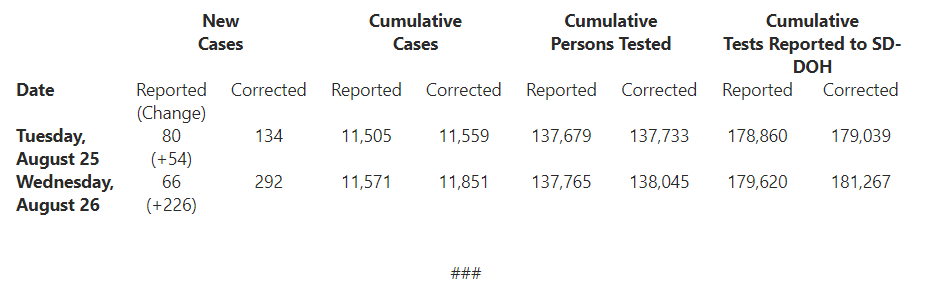
BEFORE:
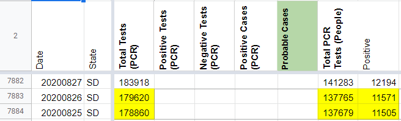
AFTER:
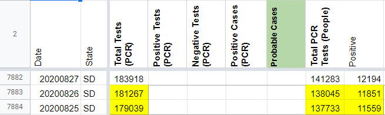
#763: [SD] Backfill Total PCR Tests (People) from 3/15-5/13 with pos+neg
Issue number 763
the-daniel-lin opened this issue on August 14, 2020, 8:27 AM PDT
Labels Backfill Historical Data not stale
State or US: South Dakota
Date Range: 3/15 - 5/13 Data Points: Total PCR Tests (People)
Describe the problem On 8/3, SD updated their dashboard to include "Total Tests," which we have recorded in Total Tests (PCR).
We also have Total PCR Tests (People), but this only goes back until 5/13. After some digging, I found that all of our Total PCR Tests (People) values are sums of the pos+neg values from the pie chart on the SD dashboard. This pos+neg pie chart dates back until 4/20, and prior to this, they have a table separating pos/neg through our earliest screenshot for 3/15. We should be able to sum these pos+neg values for a complete time series.
The 3/15 screenshot shows data "as of" 3/14 and confirms that these values refer to individual people:

Link to data source State screenshots
Comments
BEFORE:
Reasoning for deletion: this value appeared to be an entry error, as it doesn't align with our current process for reporting Total Tests (PCR), which only began on 8/3.
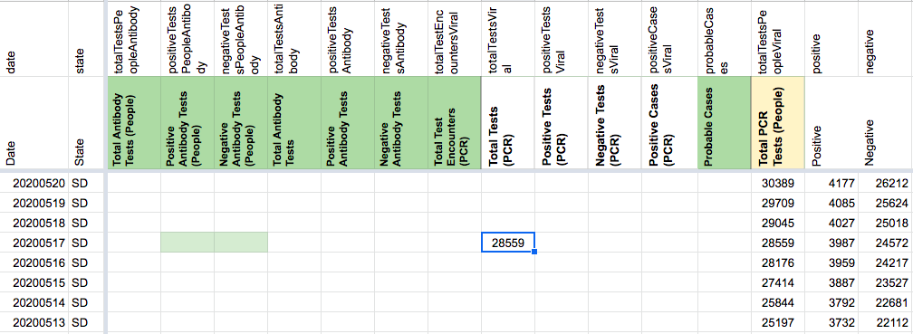
AFTER: 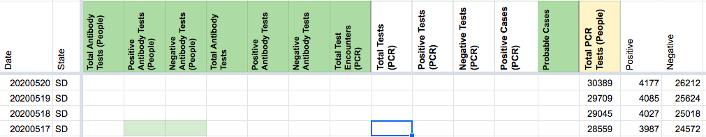
BEFORE: The two highlighted values for Total PCR Tests (People) appear to be miscalculated. sum(c(positive,negative)) for 5/13 and 5/14 does not equal the associated values for Total PCR Tests (People). 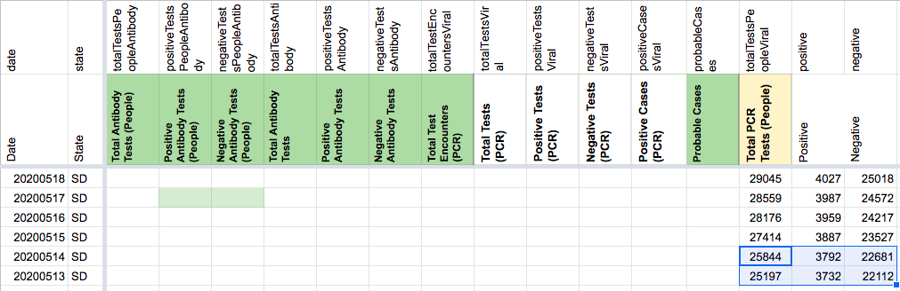
AFTER: (22681+3792) = 26473 (22112+3732) = 25844
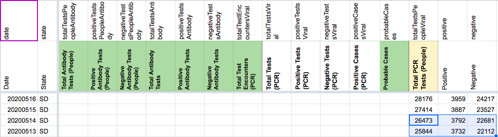
BEFORE BACKFILL: 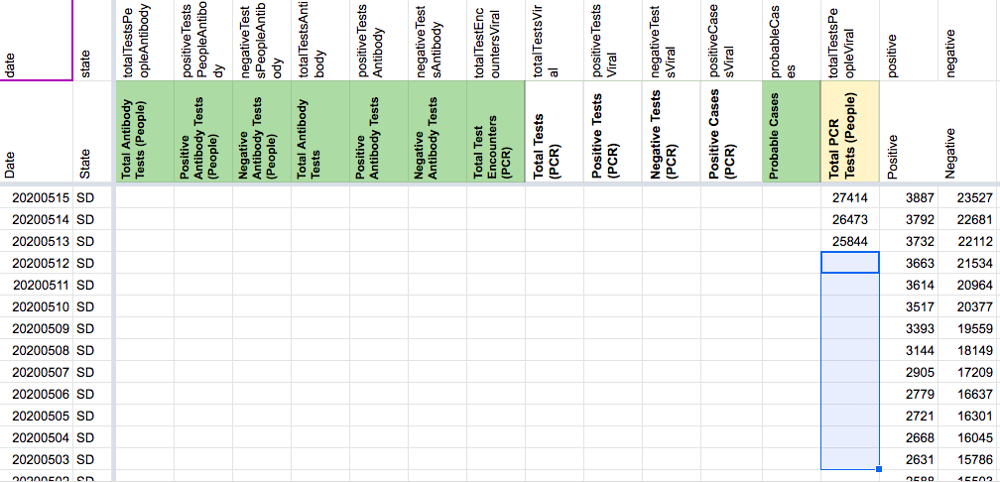
AFTER: 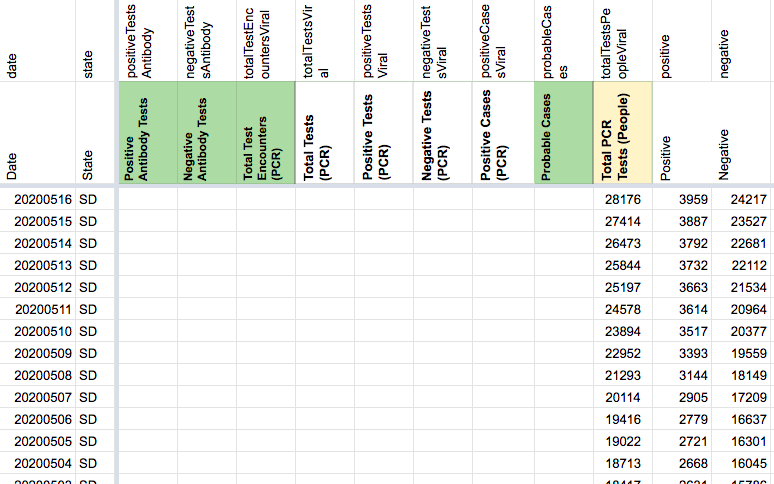
ALL VALUES IN TOTAL PCR TESTS (PEOPLE) 3/7-5/13:
25844 25197 24578 23894 22952 21293 20114 19416 19022 18713 18417 18091 17363 17028 16833 16612 16375 16274 15596 14824 14065 13446 12815 12326 12062 11660 11062 10550 9859 9296 9002 8553 8004 7647 7147 6748 6268 6020 5593 5224 4780 4382 4032 3717 3579 3217 2660 2445 2019 860 820 790 761 705 677 562 562 562 504 336 191 82 35 18 11 5 5 5
Looks like this is done!
#724: [SD] Patch Timestamps through 7/13 *Low Priority*
Issue number 724
hmhoffman opened this issue on August 2, 2020, 3:11 PM PDT
Labels Backfill Historical Data
Describe the Issue: On 8/2 it was discovered that SD has changed their data as of time to 13:00, we are now using previous day 13:00 as the timestamp. Before this change we were using previous day 17:00. This change was made on 7/13, so we should patch timestamps from 8/1 - 7/13 using previous day 13:00.
Data Source: https://doh.sd.gov/news/Coronavirus.aspx
Comments
Timestamps were patched in States Daily in accordance with current practices.
Before: 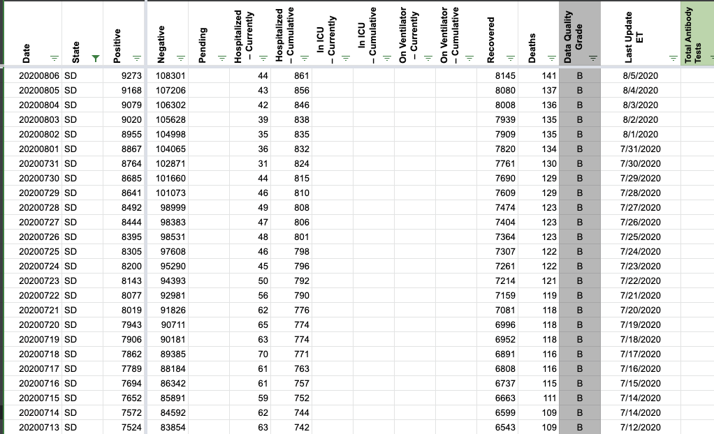 After: 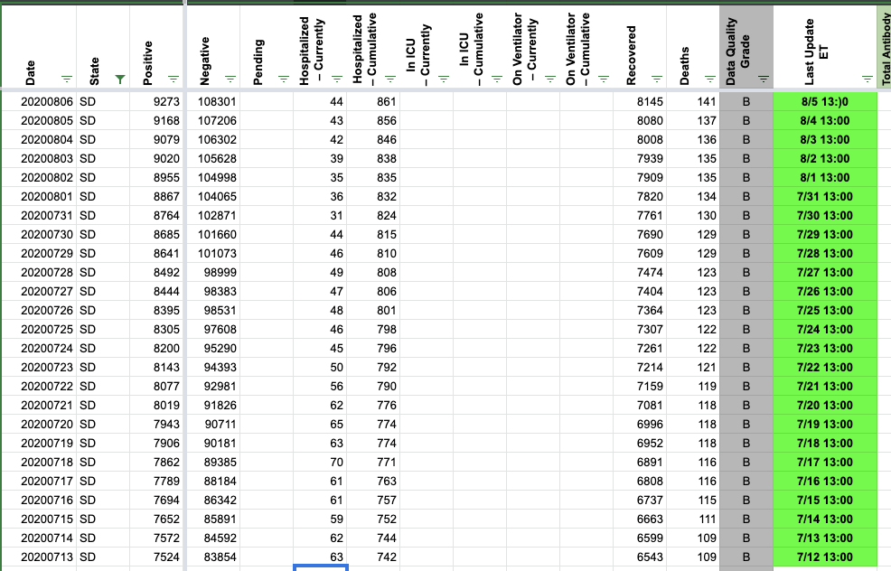
#687: [SD] PCL Historicals
Issue number 687
jesseandersonumd opened this issue on July 29, 2020, 6:35 AM PDT
Labels Historical Data
State: SD
Issue description: We can't confirm that antibody testing isn't lumped in with RT-PCR testing results. SD has no annotation that explicitly states that cases are only confirmed, but we started reporting values in positive cases (PCR) on 7/17. These values should be removed from positive cases (PCR).
Source: https://doh.sd.gov/news/Coronavirus.aspx
Comments
BEFORE (positive cases (PCR) column) 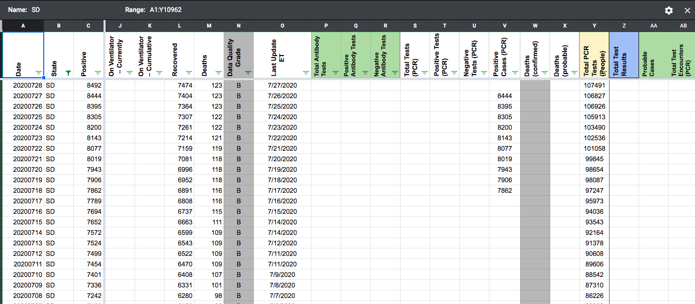
AFTER (positive cases (PCR) column) 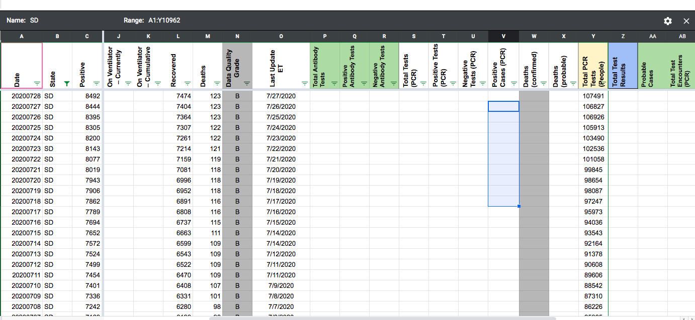
POPUP BEFORE (positive cases (PCR) column) 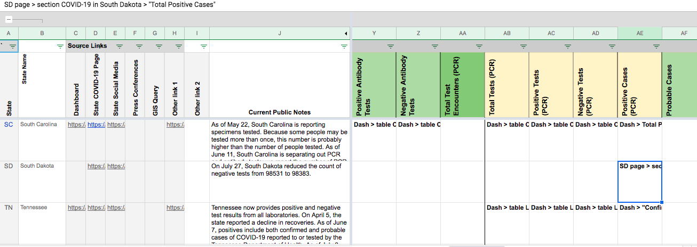
POPUP AFTER (positive cases (PCR) column) 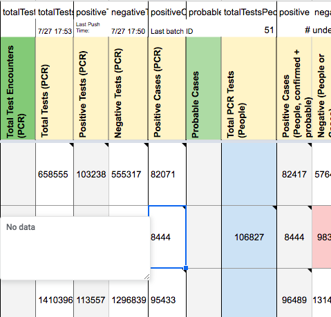
(DZL) Doublechecked -- 7/31 7:34
#623: [SD] Unclearly defined case count included in confirmed cases
Issue number 623
brianskli opened this issue on July 14, 2020, 7:19 AM PDT
Labels Data quality
State or US: South Dakota
Describe the problem Unclearly defined case count included in confirmed cases. SD has unclear case definitions.
Link to data source https://doh.sd.gov/news/Coronavirus.aspx
Comments
Steps taken to address issue:
- WS2 source note updated
- States Daily changed (numbers in confirmed column cleared) 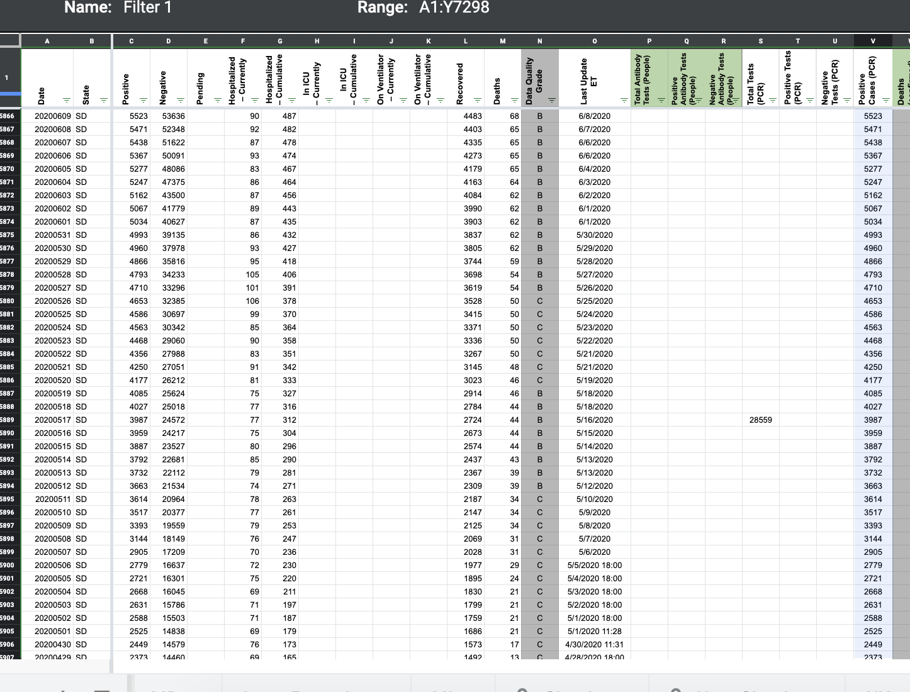 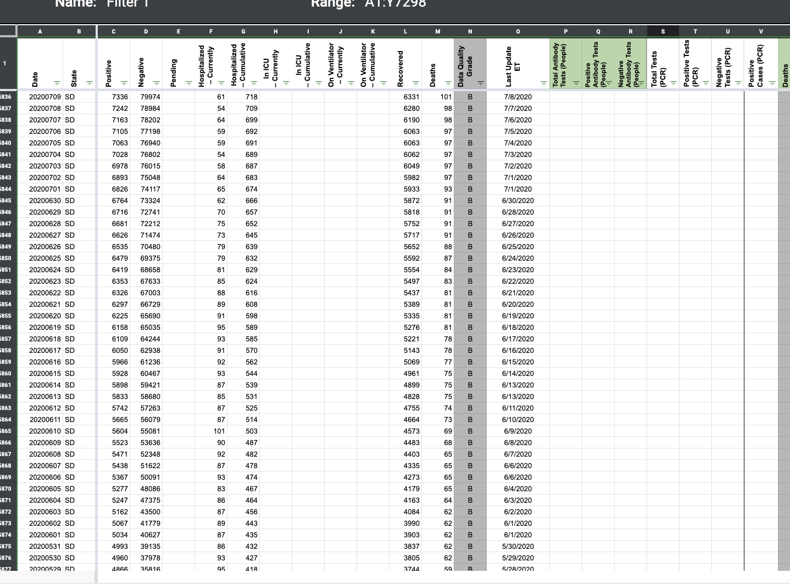
On 7/17, we began incorrectly reporting the unclearly defined case count in the confirmed cases column: 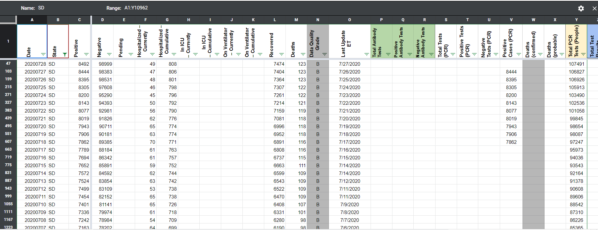
Slack Thread: https://covid-tracking.slack.com/archives/C012C4BEAR4/p1595946823327700
We have a new issue for this: https://github.com/COVID19Tracking/issues/issues/687
#548: [SD] PCL Historicals and WS2
Issue number 548
pscsharon opened this issue on June 26, 2020, 7:12 AM PDT
Labels PCL/SVP Historicals
Death values are historically recorded in both the "Deaths" and "Deaths (Confirmed)" columns for SW. However, SW’s death values are unclear about what they represent, so they should only be recorded in the main "Deaths" field.
Comments
Updated tooltip and added process note.
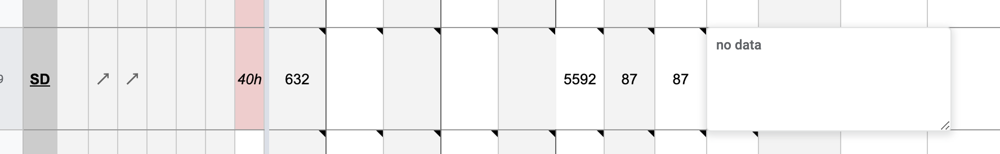BEFORE 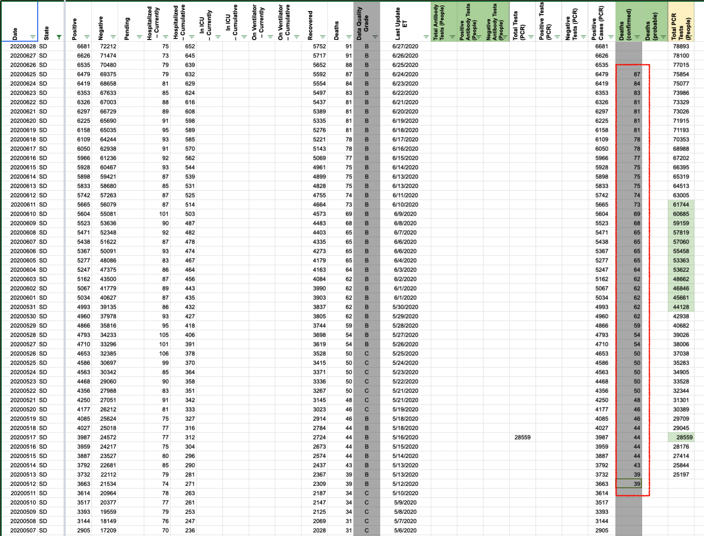
AFTER 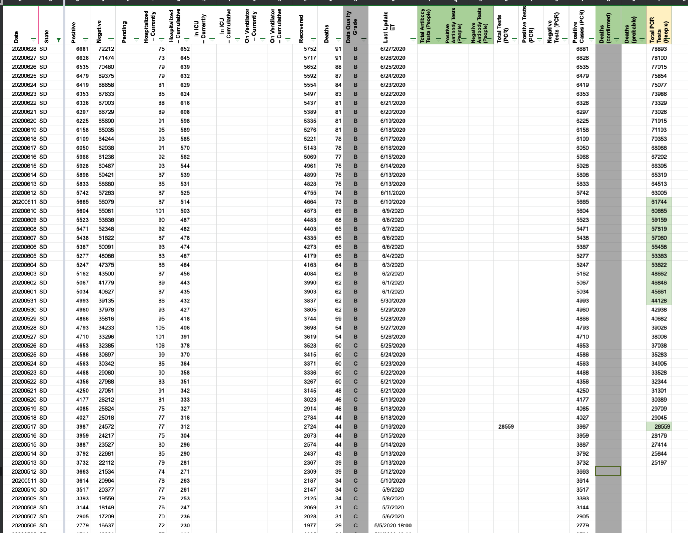
#186: Interface field DataPoint.positives expected but USDailyDataPoint does not provide it
Issue number 186
rlamoni opened this issue on April 12, 2020, 10:43 AM PDT
Labels stale
Visiting https://covidtracking.com/api/graphql in chrome or using the API Playground (https://covidtracking.com/api/playground) produces the following error message rather than data.
Error: Interface field DataPoint.positives expected but USDailyDataPoint does not provide it.
Interface field DataPoint.negatives expected but USDailyDataPoint does not provide it.
Interface field DataPoint.positivesPlusNegatives expected but USDailyDataPoint does not provide it.
Interface field DataPoint.deaths expected but USDailyDataPoint does not provide it.
at m (worker.js:29:129250)
at x (worker.js:29:6581)
at E (worker.js:29:5626)
at Module.O (worker.js:29:5365)
at Object.t.generateSchemaHash (worker.js:51:56541)
at l.generateSchemaDerivedData (worker.js:51:147)
at new t.ApolloServerBase (worker.js:39:274246)
at new l (worker.js:73:19678)
at worker.js:39:128673
at a (worker.js:39:128736)
Comments
This issue has been automatically marked as stale because it has not had recent activity. It will be closed if no further activity occurs. Thank you for your contributions!
This issue has been closed because it was stale for 15 days, and there was no further activity on it for 10 days. You can feel free to re-open it if the issue is important, and label it as "not stale."
Multi-edit tool-PRODUCTION - SD-reb-20210304_post.csv.txt Multi-edit tool-PRODUCTION - SD-reb-20210304.csv.txt